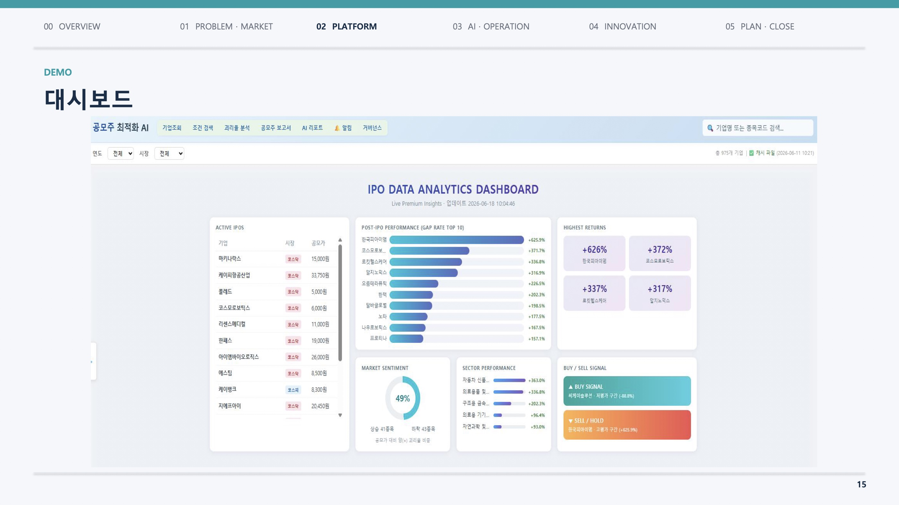

회사가 주식시장에 처음 상장할 때 파는 주식을 공모주라고 한다. 상장 직후 1~6개월은 주가가 크게 출렁이는 시기라 사고파는 타이밍이 수익을 좌우하는데, 판단에 필요한 정보는 공시 사이트, 뉴스, 내부 메모에 흩어져 있었다. 리포트 양식도 사람마다 달라 비교와 검증이 어려웠다.
두 개의 축으로 시스템을 만들었다. 하나는 흩어진 자료를 모아 투자 분석 리포트를 자동으로 써주는 엔진이고, 다른 하나는 공모가와 현재 주가의 차이(괴리율)를 실시간 추적하다가 기준에 도달하면 텔레그램으로 알려주는 매매 신호 시스템이다. 역할이 다른 AI 4개(자료 조사, 리포트 작성, 수치 검증, 운영)가 분업하고 서로 검증하는 멀티 에이전트 구조를 썼다. 중요한 원칙이 있다. AI는 알려주기만 하고(Alert), 실제 매매 결정은 반드시 사람이 한다(Action). 돈이 오가는 일이기 때문이다.
실제로 동작하는 웹 대시보드와 알림 시스템까지 만들어 시연했고, 리포트 작성 시간을 80% 줄이는 것이 목표다. 우선은 회사 내부 3인용으로 쓰고, 시장이 발전하면 같은 구조를 확장할 계획이다. AI를 잘 모르던 금융인들에게 보여줬더니 "돈 주고 팔아도 되겠다"는 반응이 나왔다고 한다.